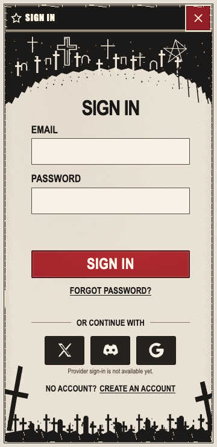
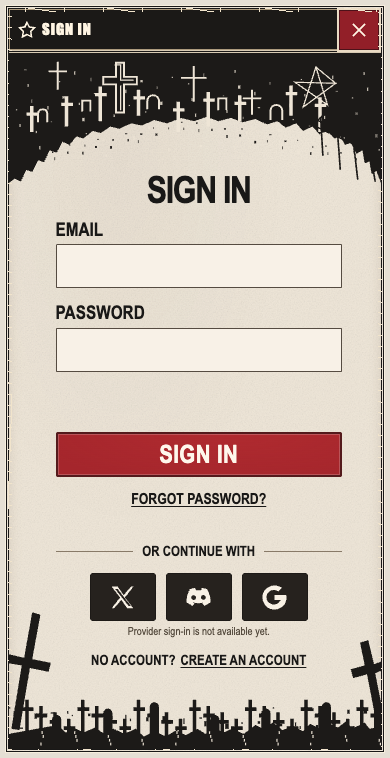
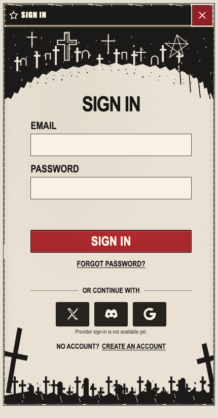

Preserved target at original aspect beside functioning /login with deterministic Auth HTTP. No live service/device acceptance. Remember-session omitted; providers remain unavailable. New cemetery drawing differs from target pixels.


